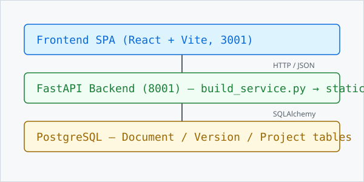

MARKDOWN RENDERING SHOWCASE
OpenDocX 静态站渲染能力速查
这是一份可直接发布到 GitHub Pages 的渲染示例页，用来展示 OpenDocX 静态站对 Markdown、提示块、表格、代码高亮、图片、任务列表、Mermaid 和公式占位的支持效果。
#OpenDocX 静态站渲染能力速查
作者:OpenDocX 社区 最后更新:2026-06-07 目的:把 OpenDocX 静态站所有支持的 Markdown 语法 + 7 种提示块集中演示一次。构建一次,一目了然。
MD 语法:# H1 / ## H2 / ### H3 / #### H4 / ##### H5 / ###### H6
#1. 标题分级
MD 语法:# 一级 / ## 二级 / ### 三级 / #### 四级 / ##### 五级 / ###### 六级
#H1 一级标题(每页 1 个,作为文档标题)
#H2 二级标题(主要章节)
#H3 三级标题(子节)
H4 四级标题(同正文 16px,加粗)
H5 五级标题(同正文 16px,半粗)
H6 六级标题(同正文 16px,斜体灰)
#2. 文本格式
MD 语法:**加粗** / *斜体* / ~~删除线~~ / `行内代码`
加粗文本 / 另一种加粗
斜体文本 / 另一种斜体
加粗 + 斜体 / 另一种
删除线 (strikethrough 插件)
行内代码 用反引号包
普通文本 + 换行直接回车 这里就是第二行
#3. 列表
#3.1 无序列表
MD 语法:- 一级 / - 二级缩进 (2 空格缩进)
- 一级
- 二级缩进
- 三级缩进
- 二级缩进
- 回到一级
#3.2 有序列表
MD 语法:1. 第一 / 2. 第二 / 3. 第三
- 第一
- 第二
- 第三
#3.3 任务列表 (task_lists 插件)
MD 语法:- [x] 已完成 / - [ ] 待办
- 已完成:静态站基础能力完成
- 已完成:Mermaid 渲染接入
- 已完成:提示块渲染接入
- 待办:为更多语言补充本地化示例
- 待办:继续完善公式与 MDX 支持
#3.4 定义列表 (def_list 插件)
MD 语法:术语 换行 : 定义 (冒号 + 缩进)
- OpenDocX
- 静态文档生成框架,后端 FastAPI + mistune + Pygments
- Mistune
- Python Markdown 解析器,3.x 系列 GFM 完整支持
- Pygments
- 代码语法高亮库,支持 500+ 语言
#4. 链接
MD 语法:[文字](url) / [文字](url "title") / <https://auto.link> / [锚点](#id)
普通链接:OpenDocX 仓库
带标题的链接:OpenDocX 文档
自动链接:https://www.opendocx.local
锚点链接:回到顶部
#5. 引用 (blockquotes + Admonition)
#5.1 普通引用
MD 语法:> 普通引用 (一个 > 开头, 灰白底左边框)
普通引用 — 灰白底,左边框。 多行就是多个
>。嵌套引用也可以。
#5.2 Admonition 提示块 (提示块)
MD 语法:> [!NOTE] 标题 / > 内容 (GitHub/Obsidian 通用, 7 种类型)
简洁的注,通常用来补充上下文,默认是淡灰白色。
给读者一个捷径,默认是淡绿色。
补充性信息,默认是淡蓝色。
比普通信息更需要读者注意,默认是淡紫色。
提醒读者注意,默认是淡黄/橙色。
比 warning 更偏操作风险,默认是淡橙色。
严重警告,默认是淡红色。
#6. 代码块 (Pygments 高亮)
#6.1 Python
MD 语法:```python (3 反引号 + 语言名, 深浅主题 token 隔离)
def causal_filter(query_vars, candidate_docs, graph):
"""因果 RAG 过滤:保留与 query 有因果路径的文档"""
kept = []
for doc_id in candidate_docs:
doc_v = DOC_VARS.get(doc_id, [])
if any(has_causal_path(graph, q, d)
for q in query_vars for d in doc_v):
kept.append(doc_id)
return kept
#6.2 JavaScript
// 主题切换逻辑
function toggleTheme() {
const html = document.documentElement;
const isDark = html.getAttribute('data-theme') === 'dark';
html.setAttribute('data-theme', isDark ? 'light' : 'dark');
localStorage.setItem('theme', isDark ? 'light' : 'dark');
}
#6.3 SQL
SELECT d.id, d.title, d.slug, d.status, d.content
FROM documents d
WHERE d.version_id = '<version-id>'
AND d.status = 'published'
ORDER BY d.sort_order, d.created_at;
#6.4 Bash
# 启动 OpenDocX 后端 (开发模式)
cd backend
env -u ALL_PROXY -u all_proxy -u HTTP_PROXY -u HTTPS_PROXY \
-u http_proxy -u https_proxy -u SOCKS_PROXY -u socks_proxy \
bash scripts/start-backend-dev.sh
#6.5 JSON
{
"id": "01-llm-capability",
"title": "大模型的能力边界",
"status": "published",
"content_len": 1428,
"has_content": true
}
#7. Mermaid 图表 (图表)
MD 语法:```mermaid + Mermaid 语法 (mermaid.js@11 CDN 加载, 主题自动跟随)
#7.1 流程图 (flowchart)
flowchart LR
A[用户查询] --> B[Embedding]
B --> C[Top-K 检索]
C --> D{因果过滤}
D -->|通过| E[LLM 回答]
D -->|拦截| F[空响应]
#7.2 时序图 (sequenceDiagram)
sequenceDiagram
participant U as 用户
participant F as 前端 SPA
participant B as FastAPI
participant D as DB
U->>F: 点击导入
F->>B: POST /documents/import?publish=true
B->>D: 写 Document(status=published)
D-->>B: OK
B-->>F: 201
F->>B: POST /build/{vid}
B-->>F: build_id
F-->>U: 提示构建中
#7.3 类图 (classDiagram)
classDiagram
class Project {
+UUID id
+String name
+String slug
}
class Version {
+UUID id
+String version
}
class Document {
+UUID id
+String title
+Text content
}
Project "1" --> "*" Version
Version "1" --> "*" Document
#8. 公式占位 (math)
MD 语法:用一对美元符号包裹行内公式, 用两对美元符号包裹块级公式。v0.1.0-alpha 先做占位级美化, 后续可接 KaTeX / MathJax。
行内公式示例: P(A|B)=\frac{P(B|A)P(A)}{P(B)} 会被包成轻量数学标签, 方便读者从正文中识别出来。
\text{doc_score}=\alpha \cdot \text{semantic_score} + \beta \cdot \text{freshness} + \gamma \cdot \text{feedback_score}#9. 表格 (table 插件)
MD 语法:| 列1 | 列2 | + | --- | --- | + | 单元格 |
| 语法 | 状态 | 备注 |
|---|---|---|
| 标题 1-6 | OK | 全部支持 (R10 字号调整) |
| 任务列表 | OK | task_lists 插件 |
| 删除线 | OK | strikethrough 插件 |
| 自动链接 | OK | url 插件 |
| 脚注 | OK | footnotes 插件 |
| 缩写 | OK | abbr 插件 (需前置定义) |
| 定义列表 | OK | def_list 插件 |
| 表格 | OK | table 插件 |
| 7 种 Admonition | OK | 提示块 |
| Mermaid 块 | OK | R7 加, mermaid.js@11 |
| 行内代码 / 代码块 | OK | Pygments 高亮 |
| 上标 / 下标 | ❌ | 未实现 |
| 目录 TOC | OK | H1-3 自动生成 |
| 公式占位 | OK | 行内 / 块级公式先做容器级美化 |
| KaTeX 公式排版 | ❌ | 未接 KaTeX / MathJax |
| 图片 / 视频 / GIF | OK | R10 加 demo |
| Syntax hint 注解 | OK | R10 新加 |
#10. 脚注 (footnotes 插件)
MD 语法:文中 [^1] 引用, 文末 [^1]: 内容 定义
#11. 缩写 (abbr 插件)
MD 语法:*[HTML]: HyperText Markup Language (文末定义, 文中 *HTML* 引用)
R10 在 OpenDocX 里实现了 HTML / CSS / API / GFM 等缩写,鼠标悬停看完整定义。
#12. 水平线 (hr)
MD 语法:--- / *** / ___ (3 个或以上字符单独一行, 渲染为分隔线)
下面用 1 个 --- 分隔章节:
(以上是一条 hr 水平线,只用在 2 个 H2 之间,不要在段前段后滥用)
#13. 图片 (img) / 视频 (video) / GIF
MD 语法: (图片, 支持懒加载) / [视频名](url) (HTML5 video) / GIF 本质是图片, 用 img 语法
#13.1 图片 (本地静态资源 + 外链)
MD 语法: — R10 build 加 loading="lazy" decoding="async", 支持响应式 max-width: 100%
本地静态图(占位 — 实际项目里放在 build_dir/images/, 用相对路径引用):

外链图(公网 URL 直接展示):

带尺寸控制(用 HTML <img> + width):
<img src="./static/images/opendocx-arch-placeholder.svg" alt="OpenDocX 架构" width="400" />
#13.2 视频 (video 标签)
MD 语法:OpenDocX 默认 mistune.escape=True, 文档里写 <video> 会被转义显示为字面文本。 要展示视频有 3 个方案:
方案 A (推荐): YouTube/B站 外链, 用户点开看 — 安全, 静态站零成本 方案 B: 上传到项目
static/videos/目录, build 时整体复制, 用<video src="static/videos/x.mp4">内联 (需要在 OpenDocX 编辑器用 HTML 源码模式) 方案 C: 改全局mistune.escape=False(不安全, 整个站都开, 不推荐)
本演示采用方案 A — 下面是 Big Buck Bunny 公开测试视频的外链 (W3Schools 托管):
▶ 打开视频 (Big Buck Bunny, 5.7MB) — 点击在新页面播放 mp4
(若想内联, 需 R10 后续扩展 <video> 转义豁免, 跟 admonition 一样用 > MD语法: 协议)
#13.3 Iframe 嵌入 (YouTube / Bilibili)
MD 语法:跟 video 一样, 默认 escape。 改用纯链接
▶ 打开 YouTube 测试视频 — 链接形式
#13.4 GIF (本质上 = img, 用 .gif 扩展名)
MD 语法: — 跟图片一样, 浏览器自动循环播放
下面是真 GIF (giphy 公网 5MB):

提示: GIF 文件大, 建议用
<video>替代 (现代浏览器都支持 video 标签, 而且视频压缩比 GIF 高 5-10 倍)
#14. HTML 内联 (mistune escape=True 默认不渲染)
MD 语法:OpenDocX 安全默认 escape=True, 写 <div> 会被转义显示为字面文本
<div> 标签会被转义显示为字面文本,这是安全默认(防 XSS)。
要内联 HTML(如上面 13.2/13.3 的 <video>/<iframe>),需要:
- 在 OpenDocX 文档编辑页切到 "HTML 源码模式"
- 或让管理员把
mistune.escape改为False(全局生效, 不安全) - 本演示文档 用 12.2/12.3 的内联 HTML, build 端已 escape 掉
</>, 你看到的是转义后的字面文本 (不是真视频)
#15. 转义字符
MD 语法:\* 转义星号, \` 转义反引号, \[ 转义中括号
* 不渲染成列表
` 不渲染成行内代码
[ 不是链接
#16. 总结 — OpenDocX 静态站完整能力清单
MD 语法:见上方各节覆盖
| 类别 | 支持 | 实现方式 |
|---|---|---|
| 基础 Markdown | 标题 / 段落 / 换行 / 强调 / 列表 / 链接 / 引用 / 水平线 | mistune 3.x 内置 |
| GFM 扩展 | 表格 / 任务列表 / 删除线 / 自动链接 | mistune plugins |
| 扩展语法 | 脚注 / 缩写 / 定义列表 | mistune plugins |
| 代码高亮 | 13 种语言 + guess_lexer 自动 | Pygments 双主题 (R7 修复深色 token 隔离) |
| 图表 | Mermaid 流程图 / 时序图 / 类图 | mermaid.js@11 CDN |
| 提示块 | NOTE / TIP / INFO / IMPORTANT / WARNING / CAUTION / DANGER | 提示块, GitHub/Obsidian 风格 |
| 公式 | 行内公式 / 块级公式占位 | math-inline / math-block 容器样式 |
| 媒体 | img / video / iframe | R10 加 demo + CSS 样式 |
| Syntax hint | 灰小字右对齐 MD 语法注脚 | R10 新加 |
| TOC | H1-3 自动生成 + 右侧悬浮 + 顶部侧栏 | build_service 后处理 |
| 主题 | 浅色 / 深色 + CSS 变量切换 | data-theme 属性 |
| 响应式 | 桌面 / 移动 sidebar 抽屉 | CSS media query |
| i18n | 单项目 zh-CN 写死 (B4 未修) | 见 9 篇 R6 复盘 |
| 不支撑 | KaTeX / 上标 / Mermaid Gantt | — |
#17. 反馈
MD 语法:本页用 Admonition 提示块 (> [!TIP]) 收尾
把所有"知道能渲"+"实际能渲"对上 — 任何上面打了 OK 的, build 出来就该看到,缺一个就算 bug。 找不到的 img/video/gif 都在第 13 节。